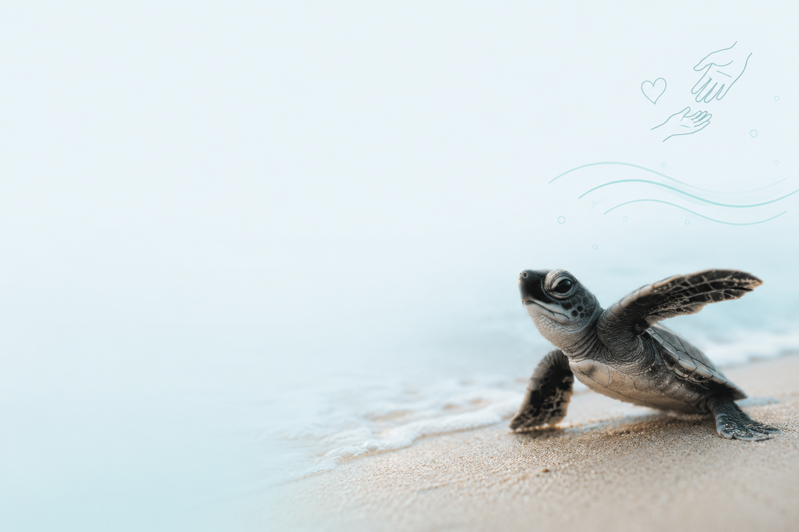

Ser voluntario
Unite a las jornadas de limpieza de playas, talleres ambientales y actividades de rescate junto a nuestro equipo.
Si querés colaborar con nuestra ONG, hay muchas formas de hacerlo. Esta página explica claramente cómo sumarte y participar en nuestras acciones de conservación, educación y rescate.
Unite a las jornadas de limpieza de playas, talleres ambientales y actividades de rescate junto a nuestro equipo.
Compartí nuestras campañas en redes sociales, con amigos y en tu comunidad para aumentar el alcance de nuestros mensajes.
Si representas una organización o empresa, podemos trabajar juntos en proyectos de apoyo, patrocinio o logística.

Email: contacto@freeturtles.org
Teléfono: +54 11 2345 6789